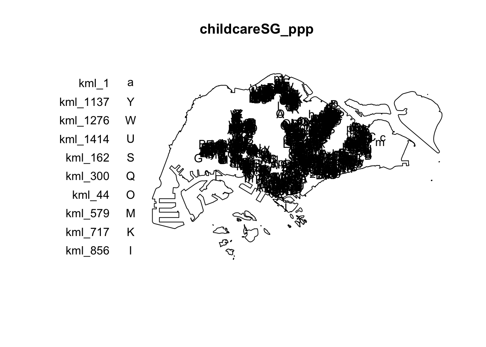

install.packages("maptools",
repos = "https://packagemanager.posit.co/cran/2023-10-13")In-Class Exercise 2
#todo
1 Exercise Reference
2 Learning Outcome
2.1 Short Sentence
“In this exercise, we will learn to analyze spatial point patterns using spatstat methods, including installing necessary packages, creating spatial objects, performing kernel density estimation, and applying edge correction methods.”
2.2 Point Form
Learning Outcomes:
- Understand how to handle the retired R package such as maptools
- Understand the difference in usage of
st_combine()andst_union()in the sf package. - Recap on usage of the spatstat package for analyzing two-dimensional spatial point patterns.
- Recap on conversion steps of sf data frames to ppp and owin objects using
as.ppp()andas.owin()functions for point pattern analysis. - Recap on Kernel Density Estimation (KDE) on spatial point events and visualize results using
spatstat.geommethods. - Understand importance of setting random seed for reproducible results when applying Monte Carlo simulations for spatial analysis.
- Practice importing and visualizing data from regional data sources in preparation for Take Home Assignment 1
3 How to Handle Retired R Packages
In our work, we might need to use retired R packages. In this section, we will see how we can use a retired package such as maptools.
Although maptools is retired and removed from CRAN, we can still download from Posit Public Package Manager snapshots by using the code block below.
Tip
Include #| eval: false in the installation code block to avoid repetitively downloads of maptools whenever the Quarto document is rendered.
4 Understanding the Salient Differences Between st_combine() and st_union()
In sf package, there are two functions allow us to combine multiple simple features into one simple features. They are st_combine() and st_union().
Tip
st_combine()returns a single, combined geometry, with no resolved boundaries; returned geometries may well be invalid.If y is missing,
st_union(x)returns a single geometry with resolved boundaries, else the geometries for all unioned pairs of x[i] and y[j].
5 Understanding the spatstat Package
spatstat R package is a comprehensive open-source toolbox for analysing Spatial Point Patterns. Focused mainly on two-dimensional point patterns, including multitype or marked points, in any spatial region.
It comprises of many sub-packages for specific usage.
| Package | Description |
|---|---|
| spatstat | Contains documentation and introductory material, including beginner’s guides, vignettes, and demos. |
| spatstat.data | Contains all datasets required for the spatstat package. |
| spatstat.utils | Provides basic utility functions for use within spatstat. |
| spatstat.univar | Contains functions for estimating and manipulating probability distributions of 1-dimensional random variables. |
| spatstat.sparse | Functions for handling sparse arrays and performing linear algebra operations. |
| spatstat.geom | Defines spatial objects (e.g., point patterns, windows, pixel images) and includes geometrical operations. |
| spatstat.random | Functions for generating random spatial patterns and simulating models. |
| spatstat.explore | Code for exploratory data analysis and nonparametric spatial data analysis. |
| spatstat.model | Code for model-fitting, diagnostics, and formal inference within spatial data analysis. |
| spatstat.linnet | Defines spatial data on linear networks and performs geometrical operations and statistical analysis. |
6 Creating ppp Objects from sf data.frame
We can derive an ppp object layer directly from a sf tibble data.frame using as.ppp() from spatstat.geom.
childcare_ppp <- as.ppp(childcare_sf)
plot(childcare_ppp)
summary(childcare_ppp)Marked planar point pattern: 1545 points
Average intensity 1.91145e-06 points per square unit
Coordinates are given to 11 decimal places
marks are of type 'character'
Summary:
Length Class Mode
1545 character character
Window: rectangle = [11203.01, 45404.24] x [25667.6, 49300.88] units
(34200 x 23630 units)
Window area = 808287000 square unitsFrom the output above, we can observe the properties of the ppp objects.
7 Creating owin object from sf data.frame
We can create owin object from polygon sf tibble data.frame using as.owin() of spatstat.geom.
sg_owin <- as.owin(sg_sf)
plot(sg_owin)
summary(sg_owin)Window: polygonal boundary
80 separate polygons (35 holes)
vertices area relative.area
polygon 1 14650 6.97996e+08 8.93e-01
polygon 2 (hole) 3 -2.21090e+00 -2.83e-09
polygon 3 285 1.61128e+06 2.06e-03
polygon 4 (hole) 3 -2.05920e-03 -2.63e-12
polygon 5 (hole) 3 -8.83647e-03 -1.13e-11
polygon 6 668 5.40368e+07 6.91e-02
polygon 7 44 2.26577e+03 2.90e-06
polygon 8 27 1.50315e+04 1.92e-05
polygon 9 711 1.28815e+07 1.65e-02
polygon 10 (hole) 36 -4.01660e+04 -5.14e-05
polygon 11 (hole) 317 -5.11280e+04 -6.54e-05
polygon 12 (hole) 3 -3.41405e-01 -4.37e-10
polygon 13 (hole) 3 -2.89050e-05 -3.70e-14
polygon 14 77 3.29939e+05 4.22e-04
polygon 15 30 2.80002e+04 3.58e-05
polygon 16 (hole) 3 -2.83151e-01 -3.62e-10
polygon 17 71 8.18750e+03 1.05e-05
polygon 18 (hole) 3 -1.68316e-04 -2.15e-13
polygon 19 (hole) 36 -7.79904e+03 -9.97e-06
polygon 20 (hole) 4 -2.05611e-02 -2.63e-11
polygon 21 (hole) 3 -2.18000e-06 -2.79e-15
polygon 22 (hole) 3 -3.65501e-03 -4.67e-12
polygon 23 (hole) 3 -4.95057e-02 -6.33e-11
polygon 24 (hole) 3 -3.99521e-02 -5.11e-11
polygon 25 (hole) 3 -6.62377e-01 -8.47e-10
polygon 26 (hole) 3 -2.09065e-03 -2.67e-12
polygon 27 91 1.49663e+04 1.91e-05
polygon 28 (hole) 26 -1.25665e+03 -1.61e-06
polygon 29 (hole) 349 -1.21433e+03 -1.55e-06
polygon 30 (hole) 20 -4.39069e+00 -5.62e-09
polygon 31 (hole) 48 -1.38338e+02 -1.77e-07
polygon 32 (hole) 28 -1.99862e+01 -2.56e-08
polygon 33 40 1.38607e+04 1.77e-05
polygon 34 (hole) 40 -6.00381e+03 -7.68e-06
polygon 35 (hole) 7 -1.40545e-01 -1.80e-10
polygon 36 (hole) 12 -8.36709e+01 -1.07e-07
polygon 37 45 2.51218e+03 3.21e-06
polygon 38 142 3.22293e+03 4.12e-06
polygon 39 148 3.10395e+03 3.97e-06
polygon 40 75 1.73526e+04 2.22e-05
polygon 41 83 5.28920e+03 6.76e-06
polygon 42 211 4.70521e+05 6.02e-04
polygon 43 106 3.04104e+03 3.89e-06
polygon 44 266 1.50631e+06 1.93e-03
polygon 45 71 5.63061e+03 7.20e-06
polygon 46 10 1.99717e+02 2.55e-07
polygon 47 478 2.06120e+06 2.64e-03
polygon 48 155 2.67502e+05 3.42e-04
polygon 49 1027 1.27782e+06 1.63e-03
polygon 50 (hole) 3 -1.16959e-03 -1.50e-12
polygon 51 65 8.42861e+04 1.08e-04
polygon 52 47 3.82087e+04 4.89e-05
polygon 53 6 4.50259e+02 5.76e-07
polygon 54 132 9.53357e+04 1.22e-04
polygon 55 (hole) 3 -3.23310e-04 -4.13e-13
polygon 56 4 2.69313e+02 3.44e-07
polygon 57 (hole) 3 -1.46474e-03 -1.87e-12
polygon 58 1045 4.44510e+06 5.68e-03
polygon 59 22 6.74651e+03 8.63e-06
polygon 60 64 3.43149e+04 4.39e-05
polygon 61 (hole) 3 -1.98390e-03 -2.54e-12
polygon 62 (hole) 4 -1.13774e-02 -1.46e-11
polygon 63 14 5.86546e+03 7.50e-06
polygon 64 95 5.96187e+04 7.62e-05
polygon 65 (hole) 4 -1.86410e-02 -2.38e-11
polygon 66 (hole) 3 -5.12482e-03 -6.55e-12
polygon 67 (hole) 3 -1.96410e-03 -2.51e-12
polygon 68 (hole) 3 -5.55856e-03 -7.11e-12
polygon 69 234 2.08755e+06 2.67e-03
polygon 70 10 4.90942e+02 6.28e-07
polygon 71 234 4.72886e+05 6.05e-04
polygon 72 (hole) 13 -3.91907e+02 -5.01e-07
polygon 73 15 4.03300e+04 5.16e-05
polygon 74 227 1.10308e+06 1.41e-03
polygon 75 10 6.60195e+03 8.44e-06
polygon 76 19 3.09221e+04 3.95e-05
polygon 77 145 9.61782e+05 1.23e-03
polygon 78 30 4.28933e+03 5.49e-06
polygon 79 37 1.29481e+04 1.66e-05
polygon 80 4 9.47108e+01 1.21e-07
enclosing rectangle: [2667.54, 56396.44] x [15748.72, 50256.33] units
(53730 x 34510 units)
Window area = 781945000 square units
Fraction of frame area: 0.422As shown above, we can display the summary information of the owin object class.
8 Combining point events object and owin object
To combine point events object and owin object:
childcareSG_ppp = childcare_ppp[sg_owin]
plot(childcareSG_ppp)
9 Kernel Density Estimation of Spatial Point Event
In this section, we will show why we should re-scale to appropriate unit of measurement before performing KDE.
kde_childcareSG_adaptive_m <- adaptive.density(
childcareSG_ppp,
method="kernel")
childcareSG_ppp.km <- rescale.ppp(childcareSG_ppp,
1000,
"km")
kde_childcareSG_adaptive_km <- adaptive.density(
childcareSG_ppp.km,
method="kernel")
par(mfrow=c(1,2))
plot(kde_childcareSG_adaptive_m)
plot(kde_childcareSG_adaptive_km)From the output above, we can notice that the plot on the right has a more interpretable scale range from 0-40km range as compared to the left plot where rescaling was not performed.
10 Kernel Density Estimation
There is 2 different ways to convert KDE output into grid object. spatstat.geom is preferred.
gridded_kde_childcareSG_ad <- as(
kde_childcareSG_adaptive_km,
"SpatialGridDataFrame")
spplot(gridded_kde_childcareSG_ad)gridded_kde_childcareSG_ad <- maptools::as.SpatialGridDataFrame.im(
kde_childcareSG_adaptive_km)
spplot(gridded_kde_childcareSG_ad)11 Kernel Density Estimation
11.1 Visualising KDE using tmap
To visualize KDE in raster output using tmap:
tm_shape(kde_childcareSG_ad_raster) +
tm_raster(palette = "viridis") +
tm_layout(legend.position = c("right", "bottom"),
frame = FALSE)12 Extracting Study Area Using sf Objects
To extract and create an ppp object showing child care services and within Punggol Planning Area:
Tip
filter() of dplyr package should be used to extract the target planning areas.
pg_owin <- mpsz_sf %>%
filter(PLN_AREA_N == "PUNGGOL") %>%
as.owin()
childcare_pg = childcare_ppp[pg_owin]
plot(childcare_pg)13 Monte Carlo Simulation
Tip
In order to ensure reproducibility, it is important to include the code block below before using spatstat functions involve Monte Carlo simulation
set.seed(1234)14 Edge Correction Methods of spatstat
In spatstat, edge correction methods are used to handle biases that arise when estimating spatial statistics near the boundaries of a study region. These corrections are essential for ensuring accurate estimates in spatial point pattern analysis, especially for summary statistics like the K-function, L-function, pair correlation function, etc.
| Method | Description |
|---|---|
| none | No edge correction is applied. Assumes no bias at the edges, which may lead to underestimation of statistics near the boundaries. |
| isotropic | Corrects for edge effects by assuming the point pattern is isotropic (uniform in all directions) and compensates for missing neighbors outside the boundary. |
| translate | (Translation Correction) Uses translation correction by translating the observation window so every point lies entirely within it, then averaging statistics over all translations. |
| Ripley | (Ripley’s Correction) Similar to isotropic correction, but specifically tailored for Ripley’s K-function and related functions. Adjusts the expected number of neighbors near edges based on the window’s shape and size. |
| border | Border correction reduces bias by only considering points far enough from the boundary so that their neighborhood is fully contained within the window, minimizing edge effects. |